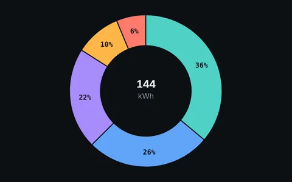
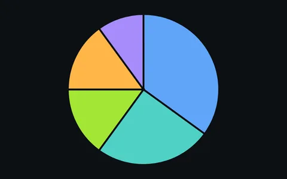
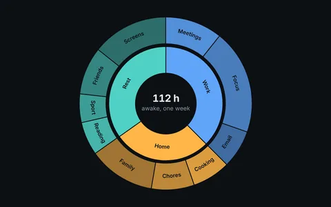

Charts
Pies, donuts and sunbursts are arcs with values. Put <o-arc value="…"> elements in a ring and they follow each other around it, each taking its share. Orbit draws the paths; you bring the data.

Donut chartFive arcs with values, and two weeks to switch.
Pie chartSlices that slide out on hover and focus.
Sunburst chartTwo levels of nested data that line up on their own.
- A donut leaves room in the middle for a total.
- A pie is denser, and pairs well with a legend outside it.
- A sunburst shows nested categories, one ring per level.